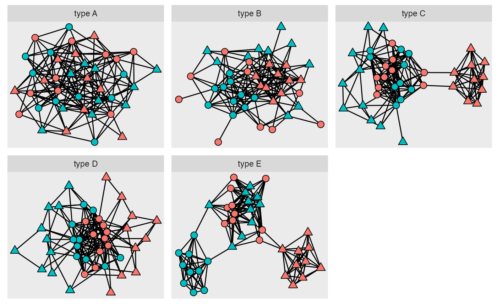
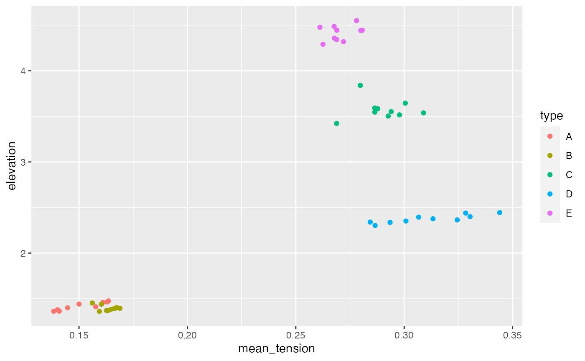

This vignette walks through a simple analysis shown in the paper The spring bounces back (arXiv:2007.09437), using 5 network classes known as Peels quintet (Peel et al 2018 doi.org/10.1073/pnas.1713019115). The purpose of the vignette is to show you how to go from a collection of networks to a plot summarising their final embeddings.
The first block, shown below, loads all the necessary packages. use install.packages() if any of the packages are not installed on your machine.
Anscombe’s quartet which showed that figures that were visually very different could have almost identical corellation and other summary statistics. Peels quintet is the graph equivalent of Anscombes quartet but for graph/networks. The networks in Peel’s quintet have two groups of nodes which are broken up into two subgroups. All the networks have the same number of node, edges, connections within and between groups. However, the connections between subgroups change producing very different networks even though they appear identical using traditional network metrics (for more information see the paper by Peel et al).
the rSETSe package has a function that generates each of the 5 types of Peels network. The code chunk below shows 1 example of each class of the quintet starting with type A on the left and ending with thype E on the right. It is clear that networks
#This is a bit of a contorted way to get 5 networks into the same plot as #igraph::union does not also merge attributes set.seed(1263) peels_networks <- 1:5 %>% map(~generate_peels_network(LETTERS[.x]) %>% #The nodes in all the networks are numbered 1:40, this line ensures #each class has distinct node names set.vertex.attribute(., "type", value = paste("type", LETTERS[.x])) %>% set.vertex.attribute(., "name", value = as.numeric(get.vertex.attribute(., "name"))+(.x-1)*40) %>% #The networks are going to be joined into a single network so need to be converted into a #list of dataframes igraph::as_data_frame(., what = "both") ) %>% #the list is now two elements long and made up of a edge and vertex part transpose() %>% #join the elements from each part of the list into dataframes map(~bind_rows(.x)) %>% {graph_from_data_frame(d = .$edges, directed = FALSE, vertices = .$vertices)} ggraph(peels_networks) + geom_edge_fan()+ geom_node_point(aes(fill = class, shape = grepl("1", sub_class)), size=3) + scale_shape_manual(values=c(21, 24)) + guides(fill = "none", shape = "none") + facet_nodes(~type, scale = "free")
 # Creating lots of networks
First we will generate 10 examples of each class of the Peel’s quintet.
all_peels <- LETTERS[1:5] %>% map(~{ peel_type <- .x out <- 1:10 %>% map(~{ #Common with other node embeddings methods SETSe only works on a single connected component #The below code ensures that the network created has a single component num_components <- 2 while(num_components >1){ g <- generate_peels_network(peel_type) num_components <- components(g)$no } return(g) }) })
#Embedding lists of networks
Then we will embed all graphs in the list using SETSe_auto, however before the graph can be embedded they need to be prepared for SETSe using one of the SETSe preparation functions prepare_SETSe_binary or prepare_SETSe_continuous. The prime purpose of these functions make ensure that the force variable has a mean of 0, creates a spring constant k if necessary, creates the node distance variable. As the Peel’s quintet is a network of two node classes A and B we will use prepare_SETSe_binary.
Once the networks have been prepared they can be embedded. After embedding the graph type and id number is added on to the embeddings data to ensure we catagorise the graph easily.
#The first map cycles though each of the graph types from A to E all_embeddings <- 1:5 %>% map(~{ temp_list <- all_peels[[.x]] node_type = LETTERS[.x] #The inner map embeds each of the 10 networks of that type out <- 1:10 %>% map(~{ id_number <- .x g <- temp_list[[.x]] embeddings_data <-g%>% #k has already been generated by the generate_peels_network function prepare_SETSe_binary(., node_names = "name", k = NULL, force_var = "class", positive_value = "A") %>% SETSe_auto(tol = sum(abs(vertex_attr(., "force")))/10000) #create the aggregated node details #embeddings_data$node_details <- create_node_details(g, embeddings_data) embeddings_data$node_details <- create_node_edge_df( embeddings_data) element_names <- names(embeddings_data) #add the id data onto each df in the list embeddings_data <- 1:length(embeddings_data) %>% map(~embeddings_data[[.x]] %>% mutate(type = node_type, id = id_number)) names(embeddings_data) <- element_names return(embeddings_data) }) return(out) }) #the list of embedding networks is then transposed and all the dataframes #representing the networks are made into a list of 5 dataframes using bind_rows all_embeddings <-all_embeddings %>% flatten() %>% transpose() %>% map(bind_rows)
aggregate the node level deatils up to whole graph level and plot the results
all_embeddings$node_details %>% group_by(type, id) %>% summarise(mean_tension = mean(tension_mean), elevation = sum(abs(elevation))) %>% ggplot(aes(x = mean_tension, y = elevation , colour = type)) + geom_point()

We can see that the networks in peels quintet are clearly distinguishable using SETSe.